COMPINT · curso 3
2. Análisis Léxico
El Analizador Léxico (Scanner) es el primer paso de la fase de análisis. Su trabajo es leer el archivo de texto (caracteres sueltos) y agruparlos en unidades con significado llamadas tokens.
Nota
Token y Componente léxico son sinónimos y se usan indeferentemente por el profesor (creo). Para mí un componente léxico es una categoría, por ejemplo un identificador o un número entero y un token es la representación que le entrega el analizador léxico al sintáctico (<identificador, "edad">).
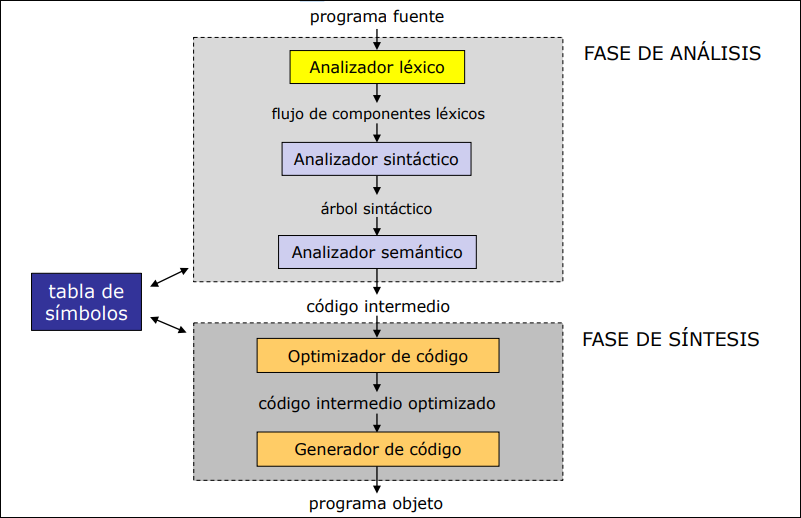
2.1 Estructura
El analizador sintáctico recibe los tokens y crea una estructura jerárquica que describe la estructura gramatical del código y léxico funcionan según el patrón productor-consumidor, siguiendo el siguiente esquema:
- Consumidor (Sintáctico): le pide al léxico el siguiente token.
- Productor (Léxico): lee los caracteres necesarios, forma el token y se lo entrega.
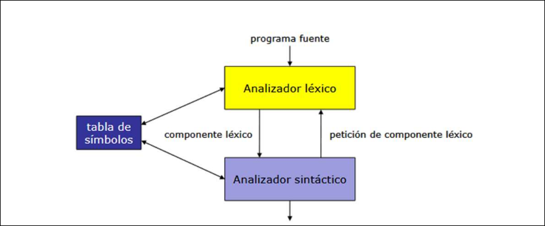
Tareas del analizador léxico:
- Reconoce los componentes léxicos de lenguaje.
- Elimina aquellos caracteres de código fuente sin significado gramatical (espacios en blanco, tabulaciones, comentarios, saltos de línea ...)
- Reconoce los identificadores de variables, tipo, constantes, métodos, etc. y los guarda en la tabla de símbolos.
- Avisa de errores léxicos detectados y los relaciona con un mensaje de error con el lugar en el que aparecen en el programa fuente.
Ventajas:
- Este modelo proporciona simplicidad porque el analizador sintáctico no tiene que preocuparse por espacios en blanco o comentarios.
- Eficiencia porque el análisis léxico consume mucho tiempo de CPU, al separarlo podemos usar técnicas de lectura rápida.
- Portabilidad, si cambias de caracteres (ej. de ASCII a Unicode), solo cambias el analizar léxico
Etapas del diseño de un analizador léxico:
- Especificación de los términos del análisis léxico mediante el uso de expresiones regulares.
- Diseño de un autómata finito no determinista que permita reconocer las expresiones regulares propuestas
- Realización de autómata finito deterministas mínimo que permita realizar un reconocimiento eficiente.
- Diseño y realización de un sistema de entrada.
- Diseño y realización de una tabla de símbolos.
- Diseño y realización de una estrategia de manejo de errores.
2.2 Especificación del Analizador
2.2.1 Términos del Análisis Léxico
- Componente léxico (token): símbolo terminal de la gramática que define el lenguaje fuente. Pueden ser signos de puntuación, operadores, palabras reservadas, identificadores ...
- Patrón: expresión regular que define el conjunto de cadenas correspondientes a un componente léxico.
[0-9]+identifica cada una cadena de una o más cifras, correspondiente al componente léxico NÚMERO_ENTERO. - Lexema: cadena de caracteres presente en el código fuente y que coincide con el patrón de un componente léxico. Por ejemplo,
453coincide con el patrón de NÚMERO_ENTERO. - Atributos: acompañan a cada componente léxico encontrado y permiten su identificación y análisis posterior. En la práctica un único atributo apunta a una entrada de la tabla de símbolos
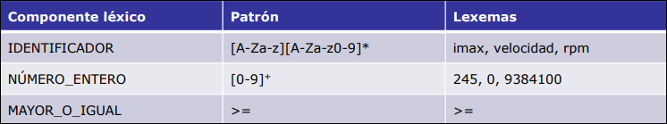
Si por ejemplo tenemos la sentencia FORTRAN E = C ** 2 se traduce como:
- <IDENTIFICADOR, apuntador en la tabla de símbolos a la entrada de E>
- <OP_ASIGNACIÓN>
- <IDENTIFICADOR, apuntador en la tabla de símbolos a la entrada de C>
- <OP_EXPONENTE>
- <NÚMERO_ENTERO, valor entero 2>
2.2.2 Expresiones Regulares
Una expresión regular
es una expresión regular y - El símbolo
(palabra vacía) es una expresión regular y - Cualquier símbolo
es una expresión regular y
A partir de estas expresiones regulares básicas pueden construirse expresiones regulares más complejas aplicando las siguientes operaciones (vistas todas en talf):
- Concatenación
- Unión
- Cierre o clausura
- Cero o un caso
- Uno o más casos
- Clases de carcateres
Ejemplos:
- La expresión regular
designa el conjunto . - La expresión regular
designa . Otra expresión regular para el mismo conjunto es . Se dice que ambas expresiones regulares son equivalentes. - La expresión regular
designa . - La expresión regular
designa el conjunto de todas las cadenas de y . Otra expresión regular equivalente es . - La expresión regular
designa el conjunto que contiene la cadena a y todas aquellas con cero o más a seguidas de una b.
Por conveniencia, daremos nombres a las expresiones regulares, utilizando dichos nombres como si fuesen símbolos:
2.3 Autómatas Finitos
Lo mismo que vimos en Teoría de Autómatas y Lenguajes formales:
2.3.1 AFN
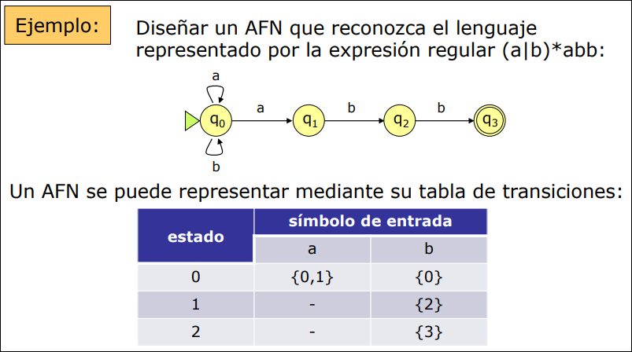
Para construir un AFN de un modo sistemático empleamos la Construcción de Thompson, que utiliza tres reglas básicas:
-
Para el símbolo
, se construye el AFN siguiente: 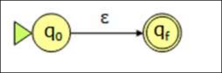
-
Para el símbolo
, se construye el AFN siguiente: 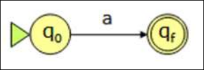
-
Supongamos que
y son AFN para las expresiones regulares y : - Para la expresión regular
se construye el AFN 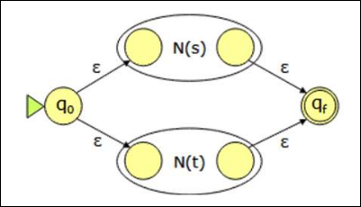
- Para la expresión regular
-
Para la expresión regular
se construye el AFN . 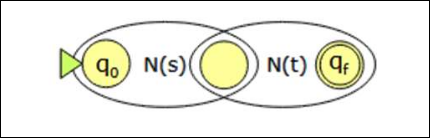
-
Para la expresión regular
se construye el AFN siguiente: 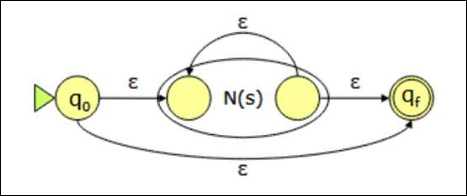
Se puede demostrar que la aplicación sistemática de las reglas anteriores da lugar a un AFN
tiene un estado inicial y uno final. Esa propiedad la satisfacen asimismo todos los AFN que lo componen tiene a lo sumo el doble de estados que de símbolos y operadores en (cada vez que se aplica una regla se crean a los sumo dos nuevos estados) - Cada estados de
tiene una transición saliente con un símbolo , o a lo sumo dos transiciones salientes con símbolos .
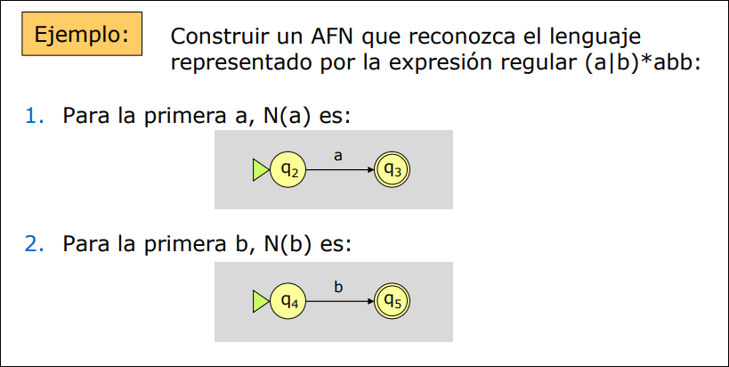
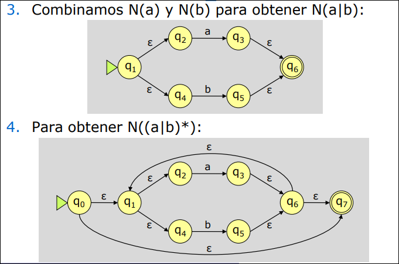
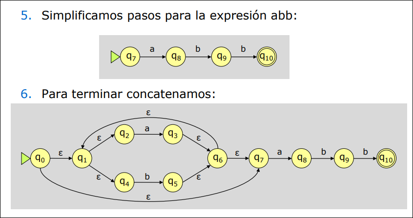
2.3.2 Autómata Finito Determinista
Necesitamos convertir el AFN a un AFD para ello empleamos el método de construcción de subconjuntos para obtener el AFD equivalente a un AFN dado. Este AFD será más sencillo de programar. Este algoritmo lo vimos en TALF.
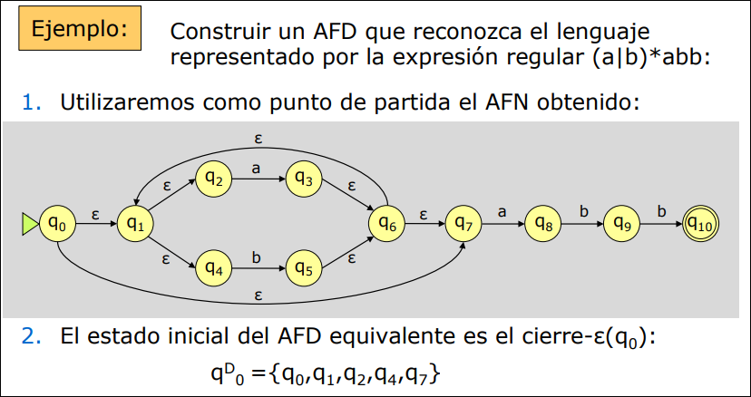
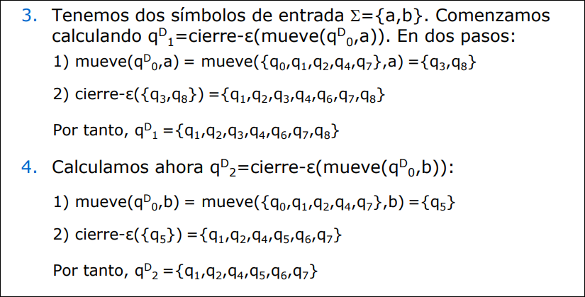
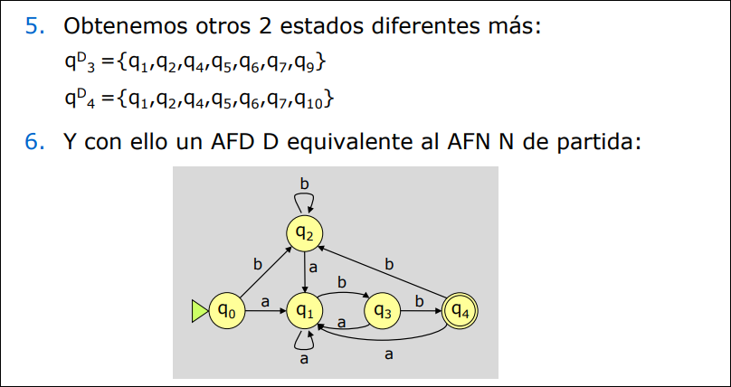
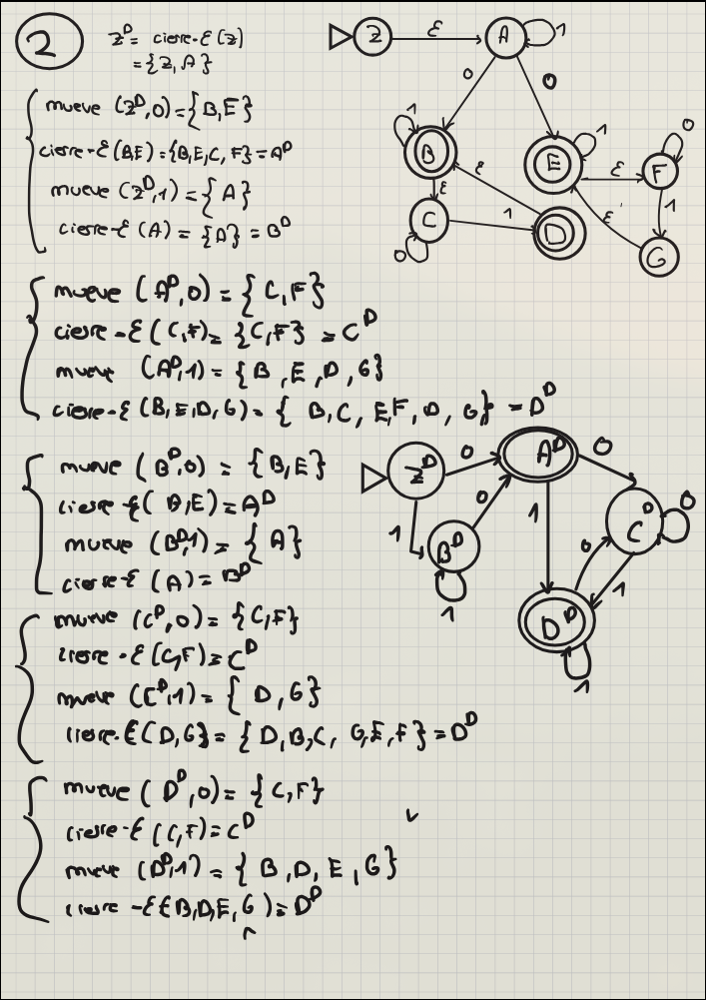
2.3.3 AFD Mínimo Equivalente
Un analizador léxico será más eficiente cuanto menor sea el número de estados del AFD correspondiente. Para cualquier AFD existe un AFD mínimo equivalente.
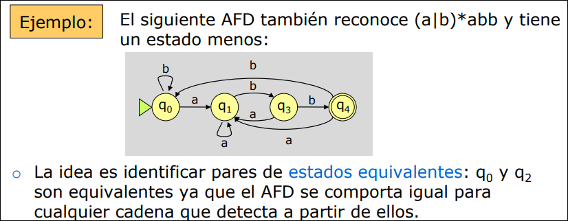
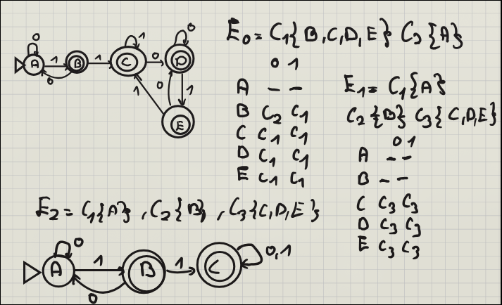
2.3.4 Construcción del Analizador
El analizador léxico se construirá a partir de la agregación de AFD organizados según un orden conveniente. Siempre se debe reconocer la cadena más larga. El último carácter leído será devuelto al flujo para ser leído en la siguiente iteración.
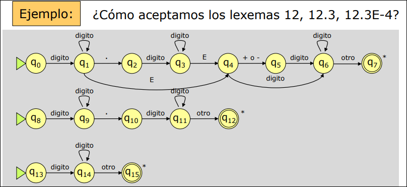
Podemos integrar los tres autómatas anteriores en el siguiente autómata:
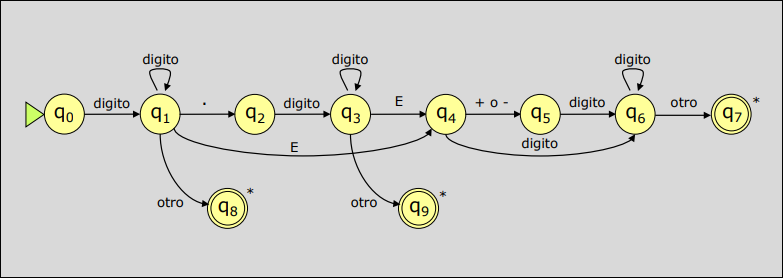
2.3.5 Herramienta LEX
LEX es una herramienta diseñada para generar analizadores léxicos automáticamente a partir de una especificación basada en el uso de expresiones regulares.
El fichero de especificación permite describir los componentes léxicos del lengauje fuente y las acciones a realizar. Su compilación da lugar a una función yylex() que invoca el analizador sintáctico para leer componentes léxicos.
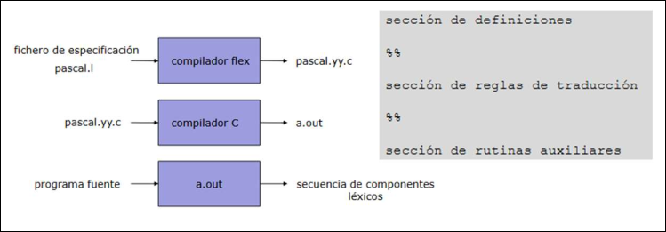
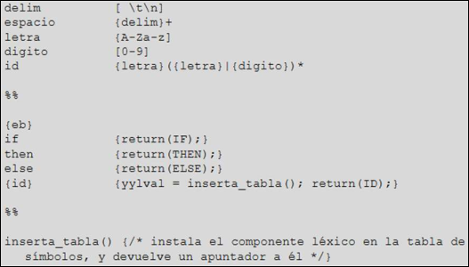
2.4 Sistema de Entrada
El sistema de entrada es un conjunto de rutinas que interactúan con el sistema operativo para la lectura de datos del programa fuente. El sistema de entrada y el analizador léxico funcionan según el patrón productor-consumidor.
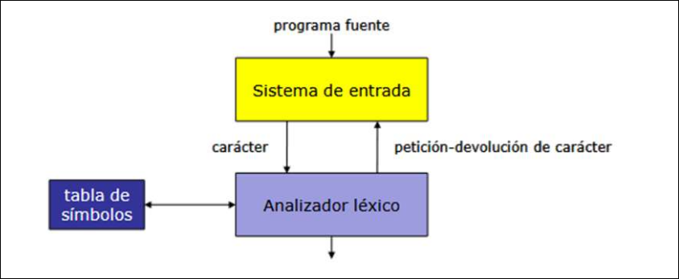
La separación del sistema de entrada supone una mejora en:
- Eficiencia: un analizador léxico en C tiene que acceder a un carácter de un fichero, que pasará del disco a la memoria, luego a una estructura file y por último a un string del analizador.
- Portabilidad: como el sistema de entrada es el único componente del compilador que se comunica con el SO, para cambiar de plataforma solo hay que cambiar el sistema de entrada.
El analizador léxico debe detectar el componente léxico con el lexema más largo posible, por lo que hay que leer caracteres anticipadamente. Para resolver esto se usa una memoria intermedia que pueda almacenar un bloque de caracteres de disco y apuntar el fragmento ya analizado. Al devolver caracteres al flujo de entrada se pueda mover un puntero tantas posiciones como caracteres a devolver.
Cualquier sistema de entrada debe:
- Ser lo más rápido posible
- Permitir un acceso eficiente a disco
- Hacer uso eficiente de la memoria
- Soportar lexemas de longitud considerable
- Tener disponibles el lexema actual y el anterior.
2.4.1 Método del Par de Memorias Intermedias
El método del par de memorias intermedias divide la memoria intermedia en dos mitades de
- Al principio, los punteros
inicioydelanteroapuntan al primer caracter de un lexema. - A medida que el analizador pide caracteres,
delanterose mueve hacia delante:- Se comprueba si se ha alcanzado el
EOF. - Se comprueba si se ha alcanzado el final de un bloque. Funciona como una lista circular, si se sobrepasa el bloque
se lee , si sobrepasa se lee .
- Se comprueba si se ha alcanzado el
- Tras reconocer un componente léxico,
inicioavanza hasta la posición dedelanteroy se iniciar el análisis del siguiente lexema.
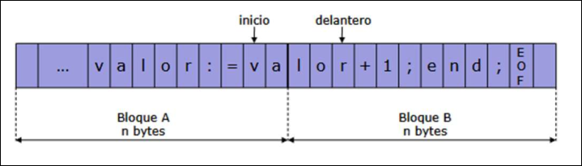
Limitaciones:
- Tamaño del lexema limitado por
: Aunque en condiciones ideales un lexema podría ocupar hasta , el sistema solo garantiza el reconocimiento de lexemas de longitud máxima . Si un lexema supera este tamaño, al avanzar el puntero delanterohacia un nuevo bloque, se sobrescribirá la memoria donde se encontraba el punteroinicio, perdiendo el comienzo del lexema antes de ser procesado. - Ineficiencia en el avance: Por cada carácter que avanza el puntero
delantero, el sistema debe realizar tres comprobaciones lógicas: si es fin de fichero, si es fin del bloque A o si es fin del bloque B.
2.4.2 Método del Centinela
En el método del centinela se añade un byte más a cada bloque, en el que se guardará un carácter centinela (EOF). De este modo, se hace una sola comprobación lógica cada vez que avanza delantero. Si la comprobación es positiva, se analiza cuán de los tres casos es.
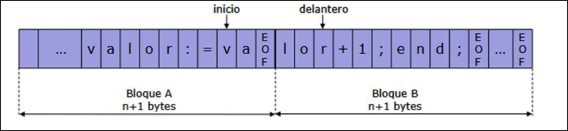
2.5 Tabla de Símbolos
La tabla de símbolos es la estructura de datos utilizada por el compilador para gestionar los identificadores que aparecen en el programa fuente: constantes, variables, tipos, funciones,...
- Cuando el compilador encuentra un identificador, guarda en la tabla información que lo caracteriza.
- Cuando se referencia este identificador, el compilador consulta la tabla de símbolos y obtiene la información que necesita.
- Una vez fuera del ámbito del identificador, se elimina de la tabla.
Durante la compilación:
- El analizador léxico, cuando encuentra un identificador, comprueba que está en la tabla de símbolos. Si no lo está, crea una nueva entrada para el mismo.
- El analizador sintáctico añade información a los campos de los atributos. Pero también puede crear nuevas entradas si se definen nuevos tipos de datos como palabras reservadas
- El análisis semántico debe acceder a la tabla para consultar los tipos de datos de los símbolos
- El generador de código puede:
- leer el tipo de dato de una variable para la reserva de espacio;
- guardar la dirección de memoria en la que se almacenará una variable.
2.5.1 Palabras Reservadas
Algunos lenguajes reservan algunas palabras que no pueden utilizarse como identificadores: printf, for, if, while, etc. Pueden distinguirse:
- Definiéndolas mediante expresiones regulares, y asociándoles un componente léxico particular.
- Mediante una tabla de palabras clave. Cada vez que se encuentra un lexema correspondiente a un identificador se busca en esta tabla.
- Insertándolas al principio de la tabla de símbolos. Se gestionan en la misma tabla palabras clave e identificadores.
La tabla de símbolos se inicializa en las primeras posiciones con las palabras reservadas del lenguaje, ordenadas por orden alfabético. Cuando se encuentra un nombre en el código fuente se consulta la tabla de símbolos:
- Si se encuentra entre las palabras reservadas se devuelve su componente léxico al analizador sintáctico.
- Si se encuentra después de las palabras reservadas es un identificador previamente encontrado.
- Si no se encuentra en la tabla de símbolos, se añade como un nuevo identificador.
De este modo se reduce el tamaño del AFD y se aumenta la eficiencia del análisis léxico.
2.5.2 Estructura de la Tabla de Símbolos.
La tabla de símbolos se estructura en un conjunto de registros, cuya longitud suele ser fija, conteniendo el lexema encontrado y un conjunto de atributos para su componente léxico. Funciona como una base de datos en la que el campo clave es el lexema del símbolo. Hay dos formas de almacenamiento:
-
Estructura Interna: Si reservas 32 caracteres para cada nombre y el programador usa variables cortas como
iox, desperdicias mucho espacio. Si el programador usa un nombre de 33 caracteres, lo cortas y causas errores.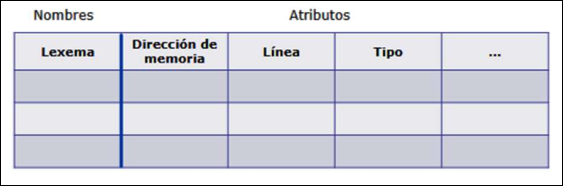
-
Estructura Externa: Esta estructura no exige una longitud fija para los identificadores, por lo que se aprovecha mejor el espacio de almacenamiento.
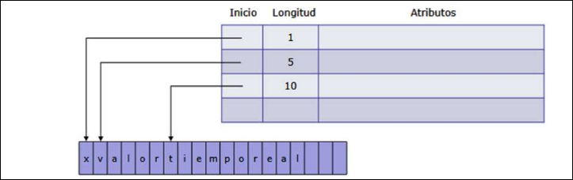
Las operaciones que se ejecutan sobre la tabla son:
- Buscar un lexema y el contenido de sus atributos.
- Insertar un nuevo registro previa comprobación de su no existencia.
- Modificar la información contenida en un registro. En general, se realiza una operación de adición de información.
Además, en lenguajes con estructura de bloque:
- Nuevo bloque: comienzo de un nuevo bloque.
- Fin de bloque: final de un bloque.
2.5.3 Organización de la Tabla
Las tablas de símbolos se organizan de dos maneras:
- Tablas no ordenadas. Generadas con vectores o listas. Poco eficientes pero fáciles de programar.
- Tablas ordenadas. Permiten definir el tipo diccionario. Utilizan estructuras de tipo vector o lista ordenada, árboles binarios, árboles equilibrados (AVL), tablas de dispersión (hash), etc.
Las reglas de ámbito, propias de cada lenguaje, determinan la definición de cada lexema en cada momento de la compilación.
Tablas de Símbolos no Ordenadas
Las tablas de símbolos no ordenadas se usa un vector o lista y una pila auxiliar de punteros de índice de bloque para marcar el comienzo de los símbolos que corresponden a un bloque.
Al terminar un bloque se eliminan todos los símbolos desde el siguiente al apuntado hasta el final de la tabla de símbolos.
Admite las siguientes operaciones:
- Inserción: al encontrar la declaración de un símbolo se debe verificar que no se encuentra en el último bloque. Si no lo está, se inserta en la última posición de la tabla, si lo está se devuelve un error (ya que el símbolo ya está definido en ese ámbito)
- Búsqueda: se hace desde el final de la tabla hasta el principio. Si se encuentra, se corresponde a la declaración realizada en el bloque más próximo.
- Nuevo bloque: se añade en la pila un puntero al último símbolo de la tabla
- Fin de bloque: se eliminan todos los símbolos de dicho bloque desde el siguiente al de inicio y después se elimina el índice de la pila.
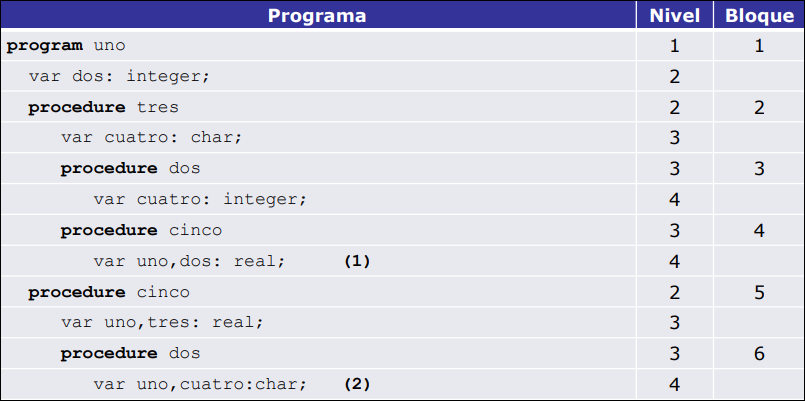
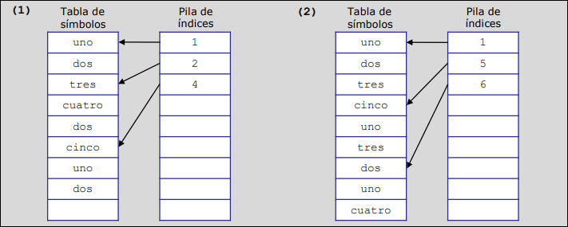
Tabla de Símbolos con Estrucutra de Árbol
Se usa un árbol binario ordenado y se añade un campo a cada registro con el nivel al que pertenece el símbolo. Para evitar duplicidades se usan listas encadenadas.
- Inserción: se busca la posición que le corresponde. Si ya hay un registro con el mismo lexema, se comprueba que el campo del nivel no tiene el mismo valor que el bloque activo. Si fuese así se indica error, en caso contrario se añade el nuevo nodo a la lista del primero. Si no hay registro se inserta en el árbol.
- Búsqueda: la propia de un árbol binario
- Nuevo bloque: se incrementa en 1 el campo de nivel
- Fin de bloque: se eliminan los símbolos de dicho bloque borrando sus registros del árbol y después decrementando en 1 la variable con el número de nivel.
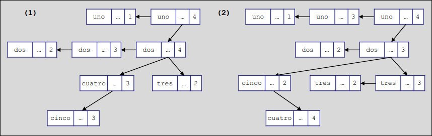
Tabla de Símbolos con Estructura de Bosque
Se usa un árbol binario para cada bloque y una pila de índices de nivel que apuntan a la raíz del árbol del nivel.
- Inserción: se realiza una inserción normal en el árbol del bloque activo
- Búsqueda: se busca el lexema en el árbol del bloque activo. Si no se encuentra, se busca en el árbol del bloque anterior, y así sucesivamente.
- Nuevo bloque: se crea un nuevo elemento en la pila de índices y una nueva estructura de tipo árbol
- Fin de bloque: se destruye el árbol asociado y se elimina el último puntero a la pila de índices.
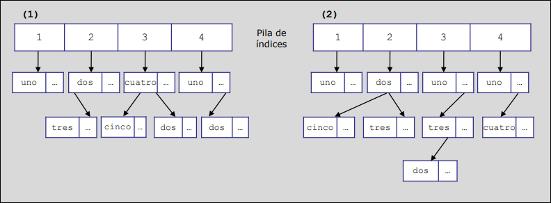
Tabla Hash
Aplica una función matemática al lexema para determinar la posición de la tabla que le corresponde. Existen dos opciones para manejar las colisiones que se producen cuando dos lexemas ocuparían la misma posición:
-
Tablas de dispersión cerradas: cuando se produce una colisión se usa alguna técnica que permita acceder a una posición vacía (sondeo lineal, multiplicativo, cuadrático, etc.)
-
Tablas de dispersión abiertas: se usa una lista encadenada de desbordamiento para resolver colisiones.
-
Inserción: como en cualquier tabla hash (se suelen usar listas de desbordamiento con los símbolos más recientes en las primeras posiciones).
-
Búsqueda: como en cualquier tabla
-
Nuevo bloque: sólo hay que almacenar el cambio de bloque activo
-
Fin de bloque: se borran todos los registros correspondientes a este bloque recorriendo prácticamente toda la tabla y después se cambia el bloque activo.
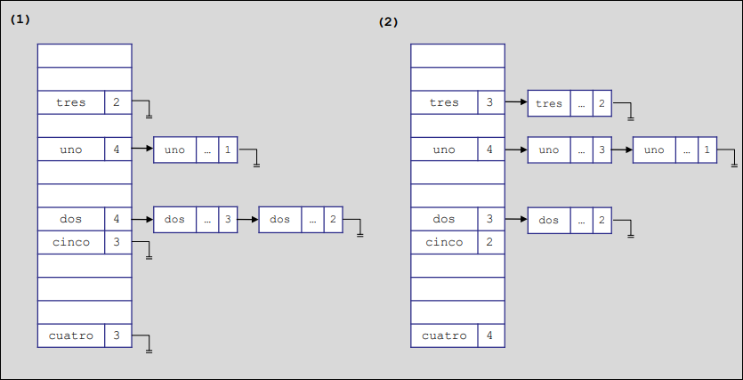
Análisis de Complejidad
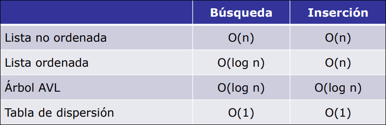
2.6 Tratamiento de Errores
Cuando en un momento del proceso de compilación se detecta un error:
- Se debe mostrar un mensaje claro y exacto, que permita al programador encontrar y corregir fácilmente dicho error.
- Debe recuperarse del error e ir a un estado que permita continuar analizando el programa en búsqueda de otros errores. Se debe evitar una cascada de errores, o pasar por alto otros.
- No debe retrasar excesivamente el procesamiento de programas correctos.
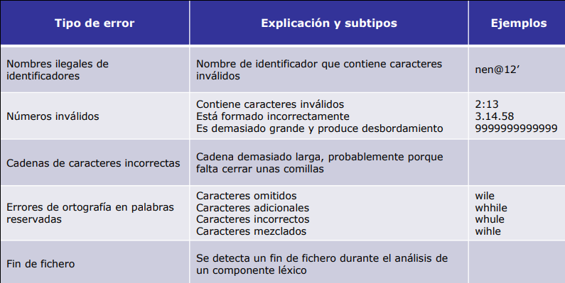
El proceso de recuperación de un error puede suponer la adopción de diferentes medidas:
- Ignorar los caracteres inválidos hasta formar un componente léxico correcto.
- Eliminar caracteres que dan lugar a error.
- Intentar corregir el error:
- Insertar los caracteres que pueden faltar.
- Reemplazar un carácter presuntamente incorrecto por uno correcto.
- Intercambiar caracteres adyacentes.
- Cuidado, intentar corregir un error puede ser peligroso.